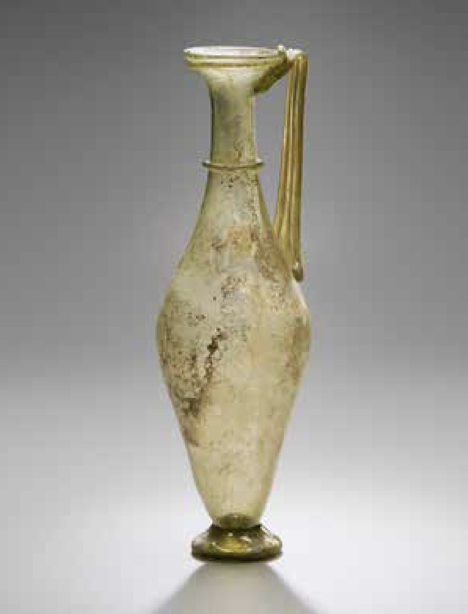
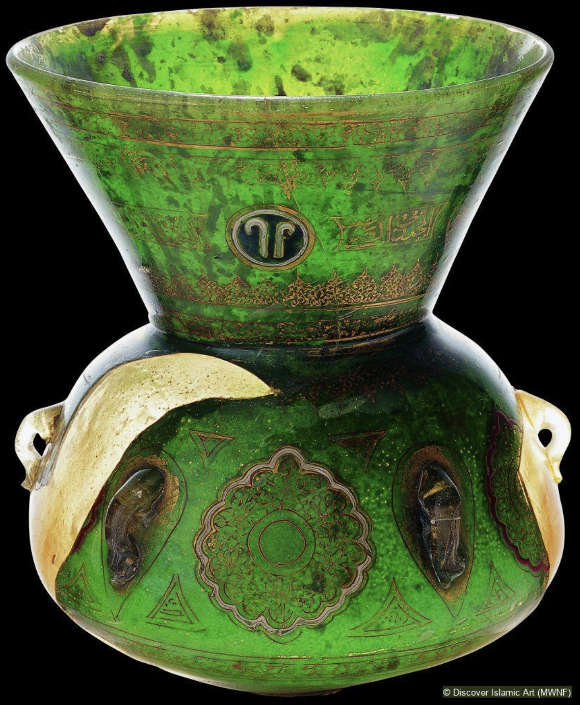
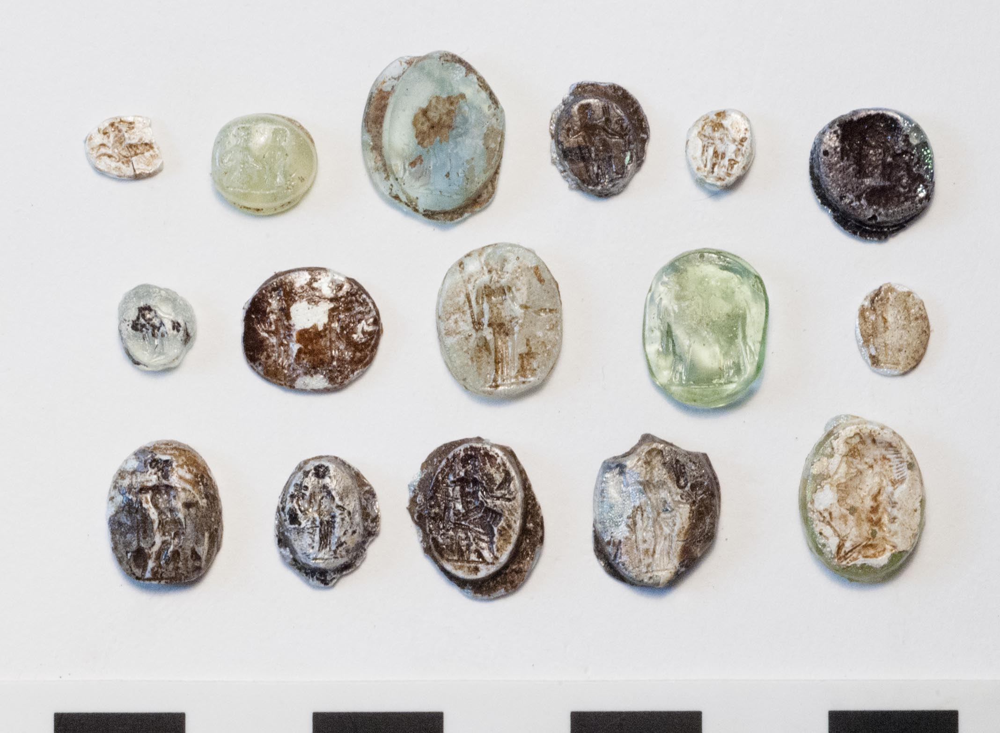
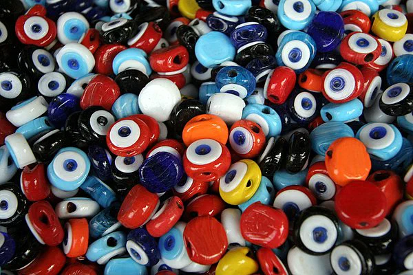
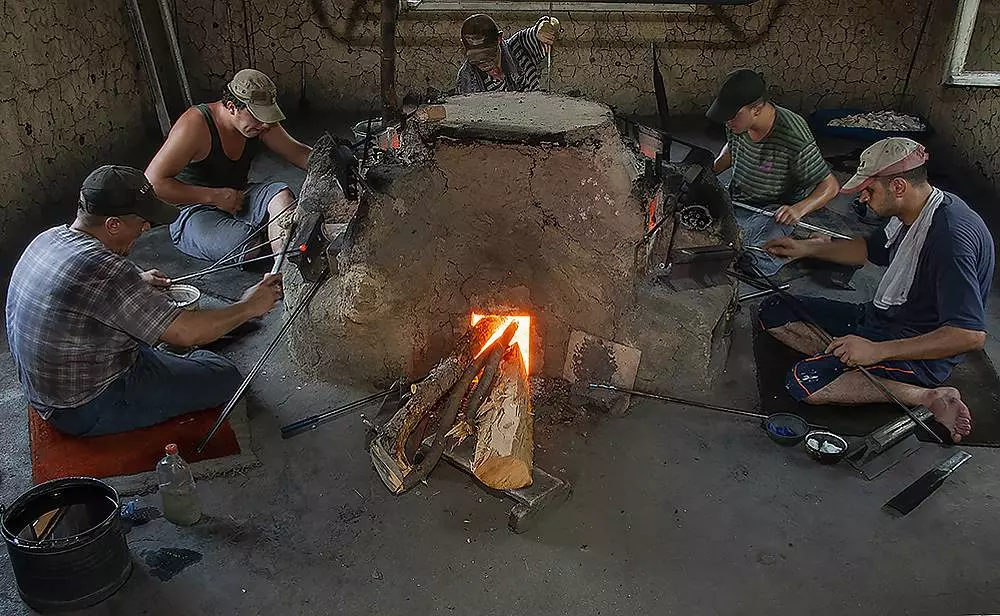
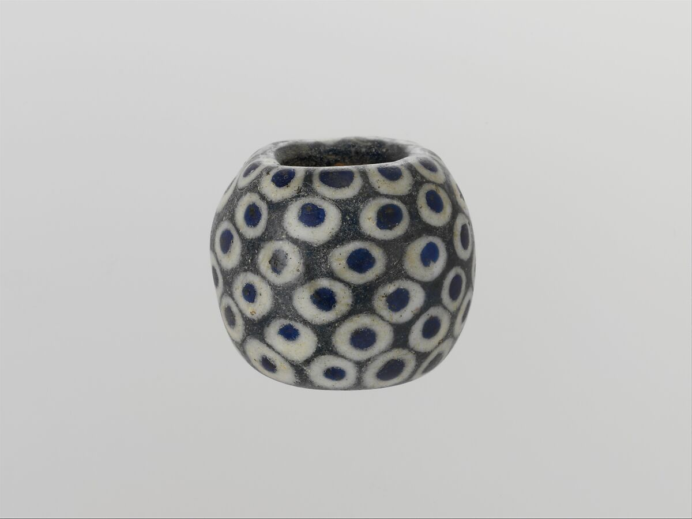
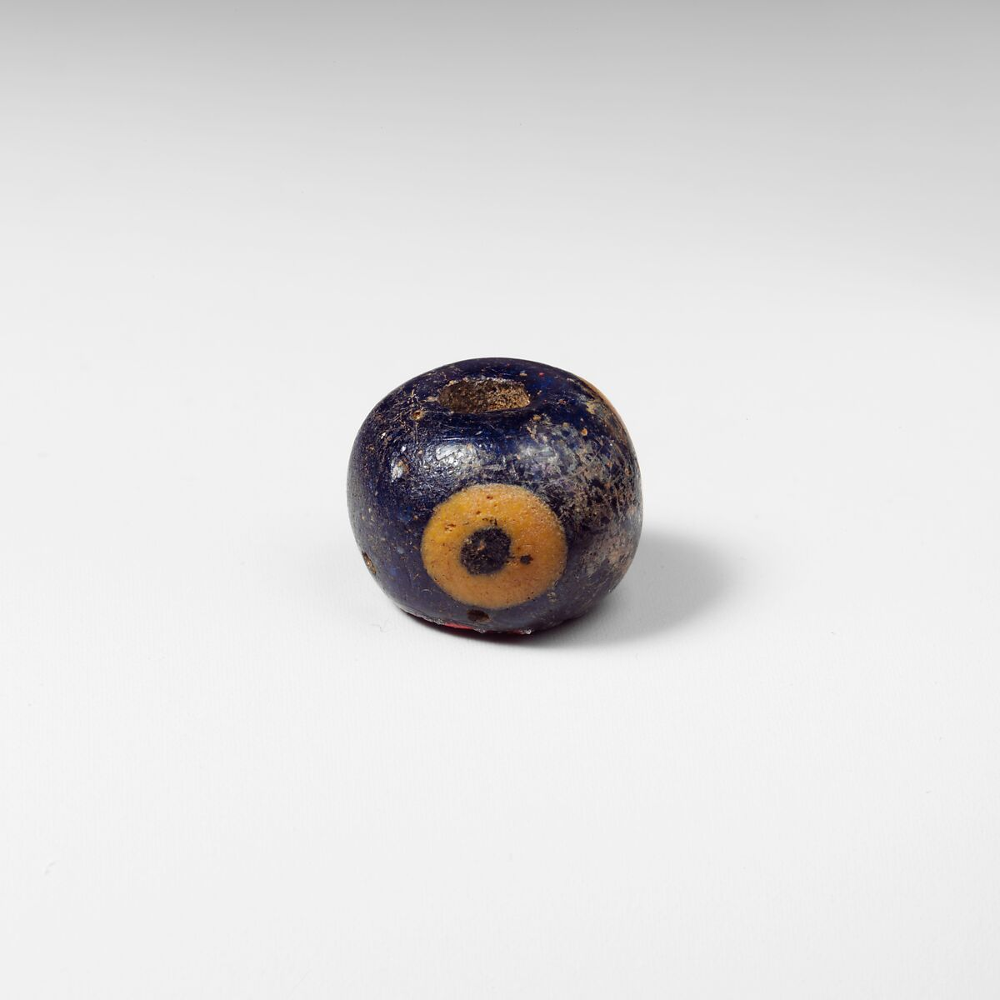
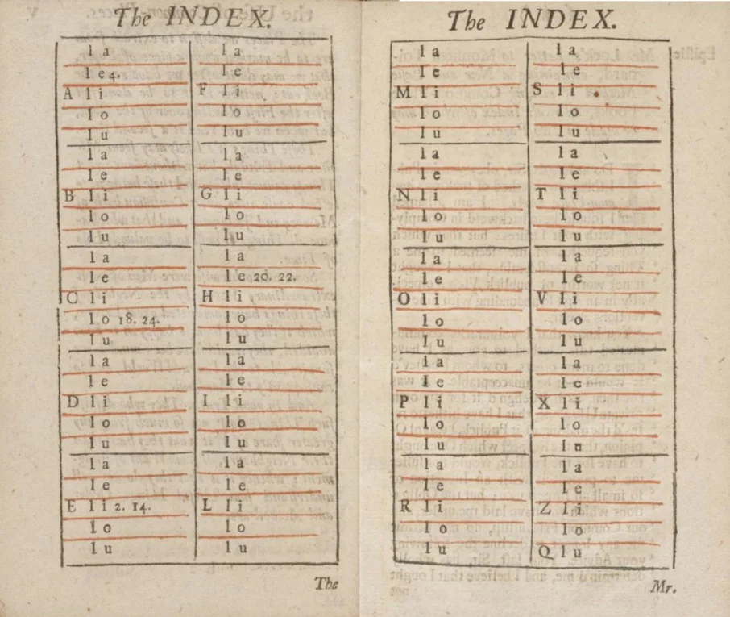
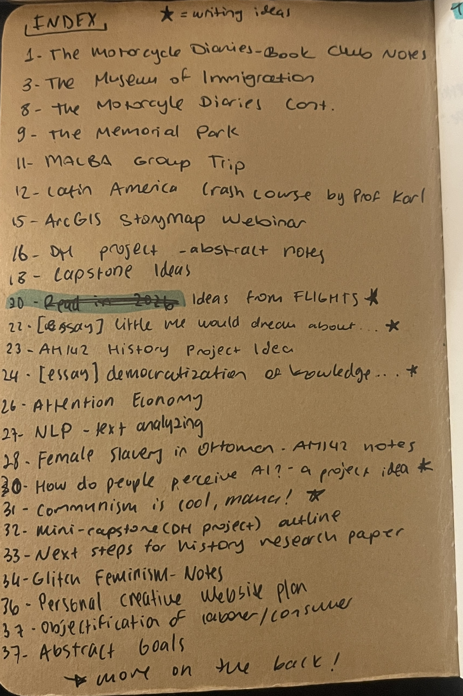

click on items to learn more about them


History of Glass Shaping
Ancient Lydian Foundations (6th c. B.C.)
Glass beads and vessels using Brick furnaces

Glass Pitcher, Eastern Mediterranean, Roman, ca. 3rd–4th century AD. Yale University Art Gallery.

Mosque Lamp at Sultanahmet Palace, Istanbul, Türkiye. Accessed at the Islamic Art Museum database.

Group of unfinished glass intaglios, mostly from early Roman contexts in Field 49 (occupied from the Lydian through the Late Roman periods). Accessed via Archaeological Exploration of Sardis by Harvard College.


Evil Eye Bead furnace and craftspeople, İzmir, Turkey, photo by Doğanay Çevik
Today in Nazarköy and Görece
handmade, wood-fired evil eye beads using traditional pine wood kilns.
Evil Eye in Mediterranean and Aegean Coasts
Belief in the evil eye dates back over 10,000 years to Paleolithic Iberian engravings, 5,000-year-old Sumerian artifacts, and 3,000-year-old Syrian amulets. In Classical Greece, philosophers including Plato, Aristotle, and Plutarch conceptualized the phenomenon as vaskania (the belief that the human gaze emits subtle energy capable of transferring harm, envy, or unspoken malice.)

Glass eye bead
Greek, Eastern Mediterranean
ca. 4th century BCE, accessed at
The MET Museum Collections

Glass eye bead Phoenician ca. 330–70 BCE, accessed at The MET Museum Collections
The traditional talisman features a cobalt blue concentric circle because light-colored eyes were historically rare across the Aegean, Western Asia Minor, and the wider Mediterranean. Blue-eyed individuals were often associated with casting *vaskania*, making blue the protective counter-color used to reflect the gaze back to its source.
SOURCEA brief history of commonplacing
Popular throughout the seventeenth and eighteenth centuries, a commonplace book served as a personalized encyclopedia of quotations, excerpts, and reflections gathered from a reader's literary journeys.

John Locke's double-page index, as printed in the English translation of New Method for Common-Place Books (1706). Accessed at Public Domain Review.
Faced with the natural limits of memory, philosopher John Locke developed a systematic method of commonplacing over 25 years. One of his methods were a two-page index at the front of the notebook listing initial letters alongside their first following vowel.
I prefer to use smaller and thinner notebooks because they are easier to carry in my leather journal and I don’t feel so overwhelmed finishing them up. Since my notebooks are smaller in content, I use a simpler indexing method with just page numbers and headers.

An example of my indexing (from an older notebook)